Zeitlos wohnen, in Ruhe nachshoppen.
Altbau, kleine Räume, Naturmaterialien: kuratierte Looks und zu jedem die passenden, gut bewerteten Produkte.
Alle Looks (50)
Kein Showroom, keine Werbefotos: Stimmungen für echte Wohnungen.
Mietwohnung, Altbau, kleine Räume – ich zeige Looks, die man wirklich nachstellen kann, und suche zu jedem Teil ein gut bewertetes Produkt heraus. Ruhig, zeitlos, ohne Kitsch.
Wohin soll es gehen?
 Festliche Tafel5 Looks
Festliche Tafel5 Looks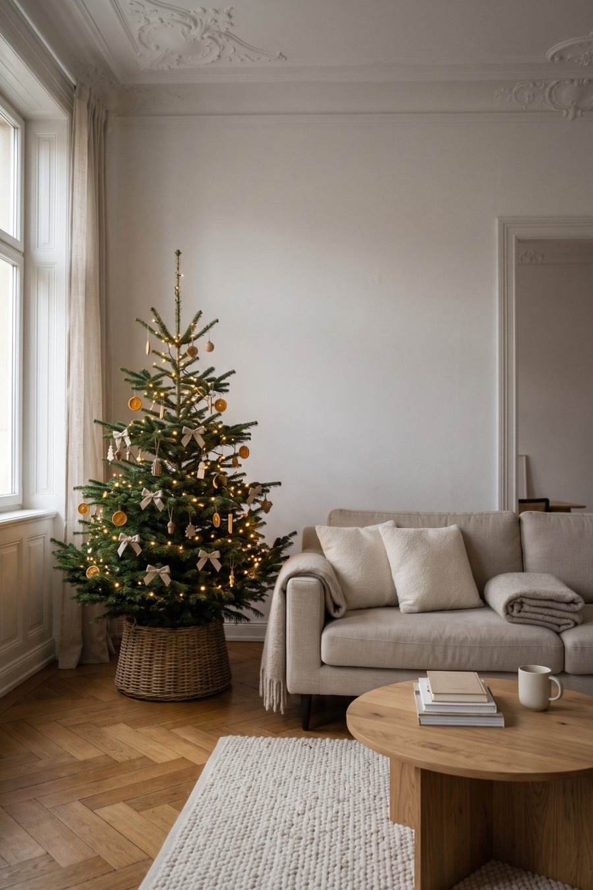
Weihnachten5 LooksGeschenkideen5 Looks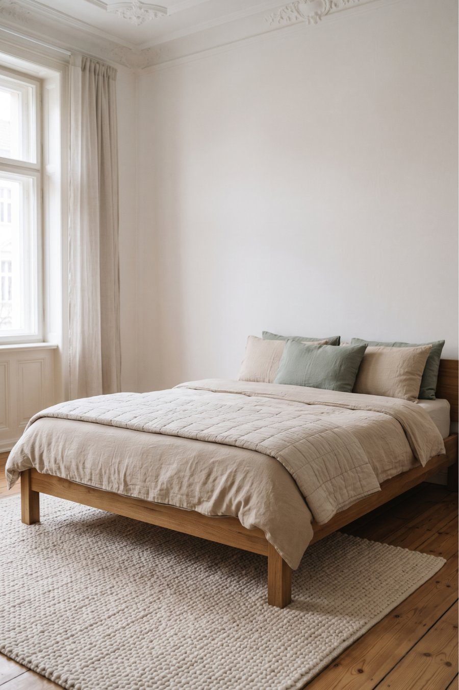
Schlafzimmer5 Looks Wohnzimmer3 Looks
Wohnzimmer3 Looks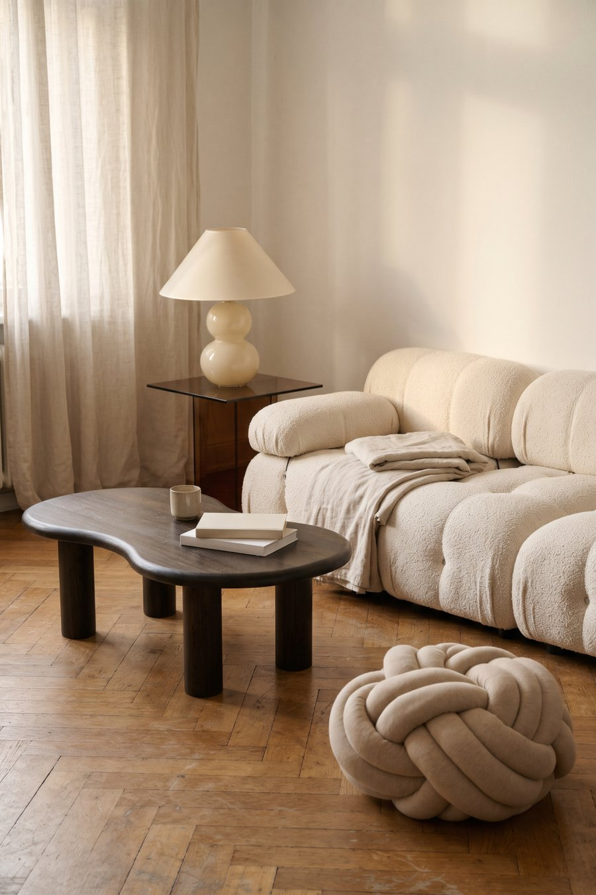
Westwing3 Looks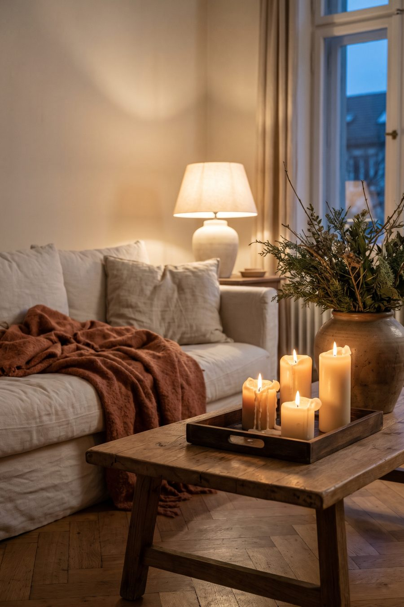
Winter zuhause2 Looks Bad5 Looks
Bad5 Looks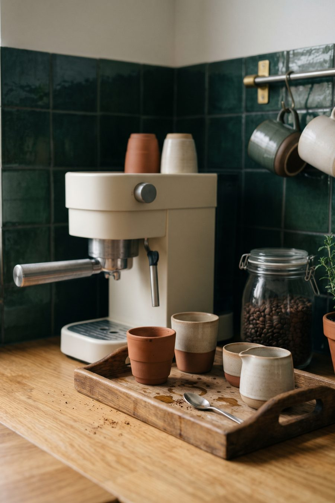
Küche2 Looks Flur2 Looks
Flur2 Looks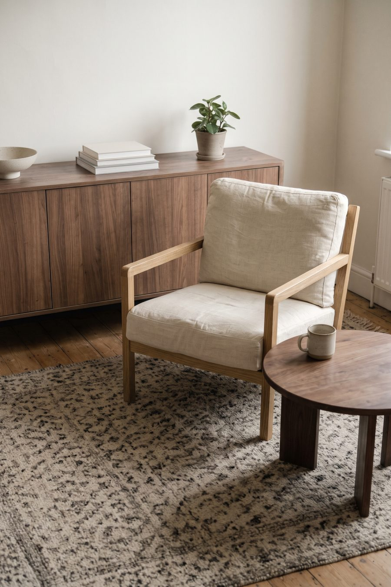
Stauraum2 Looks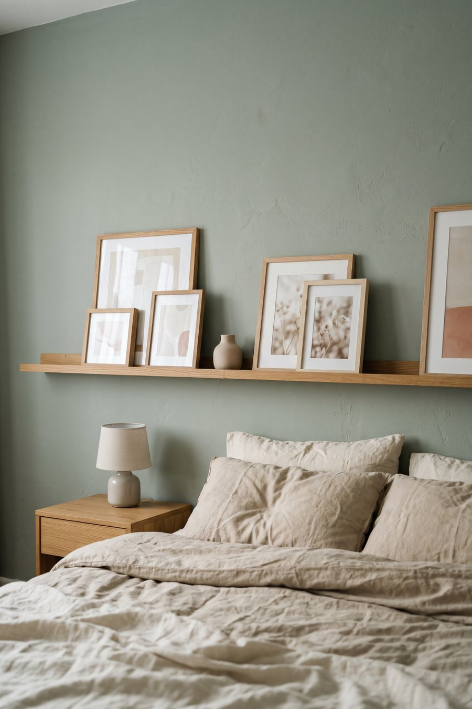
Bilderwand2 Looks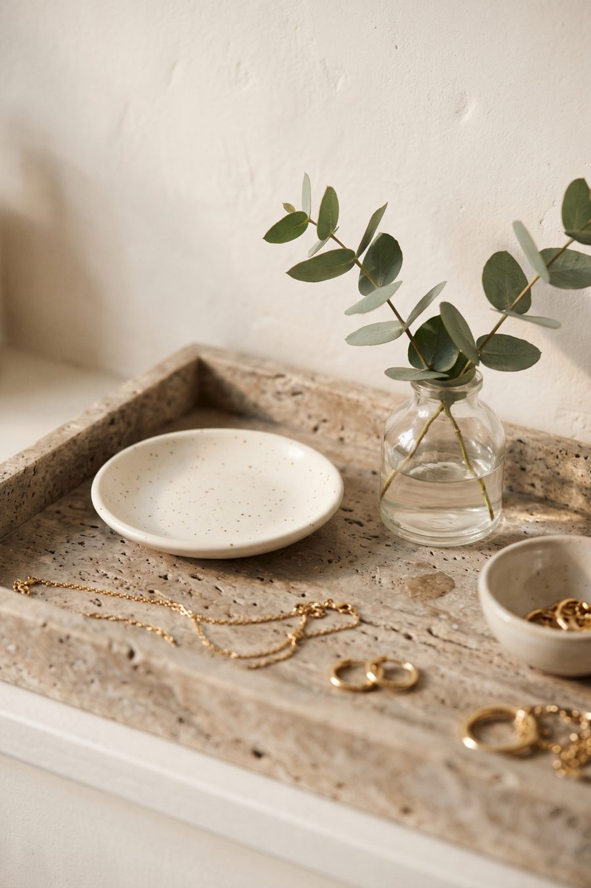
Schmuck2 Looks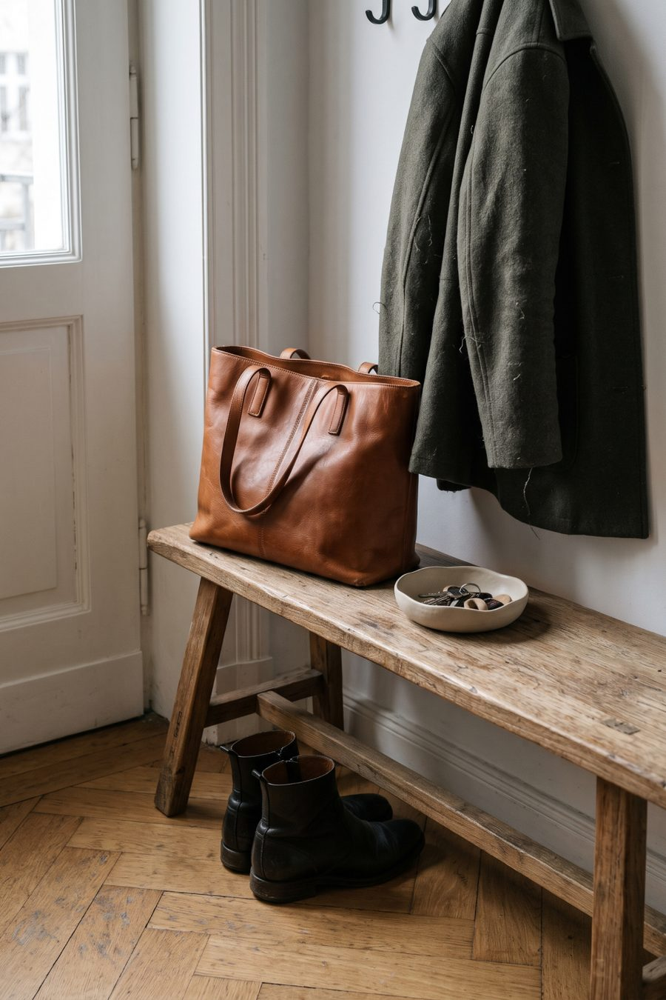
Winterlooks2 Looks Ordnung5 Looks
Ordnung5 LooksFestliche Tafel ohne Kitsch
Weihnachten, Silvester und das Frühstück danach – festliche Tische in Leinen, Kerzenlicht und Grün.

Weihnachten im Wohnzimmer
Weihnachten ohne Kitsch: natürlicher Baum, moderner Adventskranz, Kerzenlicht und eine Leseecke für die Feiertage.
Geschenkideen mit Stil
Ruhige Geschenke mit Stil: für sie, für Gastgeber, für Kaffeeliebhaber und für gemütliche Abende.
Für alle, die Kaffee lieben
Look ansehen ↗4 ProdukteGeschenke für gemütliche Abende
Look ansehen ↗4 Produkte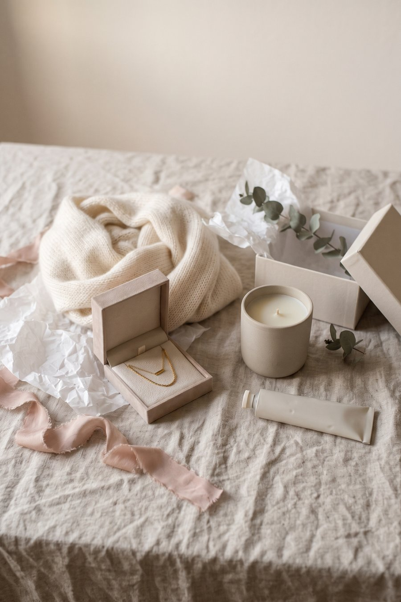
Geschenke für sie mit leisem Luxus
Look ansehen ↗5 Produkte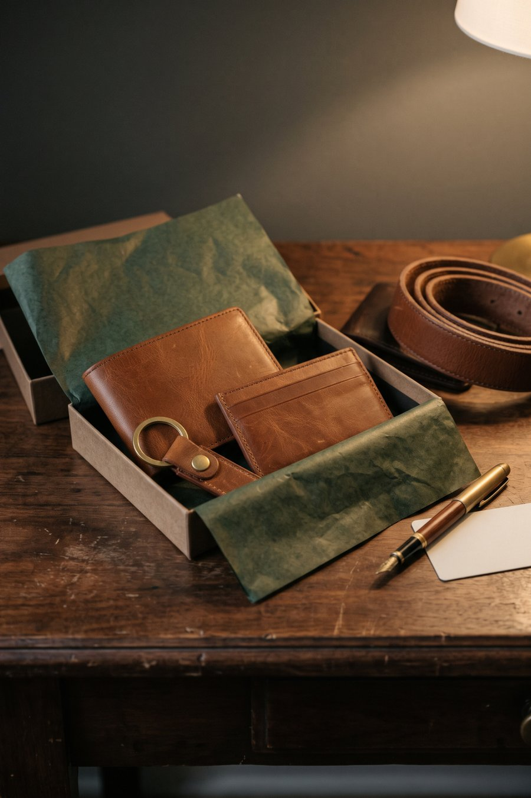
Kleine Lederwaren, die lange halten
Look ansehen ↗5 ProdukteWinter-Schlafzimmer
Leinen, Grobstrick, warmes Licht: ruhige Schlafzimmer für die kalte Jahreszeit.
Wohnzimmer mit Charakter
Altbau, Japandi und Neo Deco – Wohnzimmer mit warmen Naturmaterialien.


Westwing-Looks
Looks mit echten Lieblingsstücken von Westwing – die Bilder zeigen genau die verlinkten Produkte.
Saison: gemütlicher Winter
Wolle, Kerzenlicht und warme Farben für lange Abende.
Badezimmer ohne Umbau
Das Mietbad schöner machen: Textilien, Keramik und Stauraum, ganz ohne Umbau.


Kleine Mietküche aufwerten
Ordnung, Stauraum und eine schöne Kaffee-Ecke, ganz ohne Umbau.
Flur und Eingang
Schlüssel, Schuhe, Garderobe – der schmale Flur mit Platz für alles.

Kleine Wohnung, viel Stauraum
Kluge Möbel und Aufbewahrung für kleine Räume.
Bilderwand-Ideen
Bilder anlehnen statt bohren: Bilderleisten und ruhige Rahmen.

Schmuck für jeden Tag
Feiner Goldschmuck und schöne Ordnung auf der Kommode.
Winterlooks
Zeitlose Winter-Basics in Wolle und Leder.
Ordnung im neuen Jahr
Ruhige Ordnung fürs neue Jahr: Kleiderschrank, Vorräte, Schubladen, Regal und Schreibtisch.


Ein Journal für ruhiges Wohnen. Die Bilder sind KI-generierte Stimmungen – die Produkte dazu suche ich sorgfältig aus, damit du den Look mit echten Dingen nachstellen kannst.